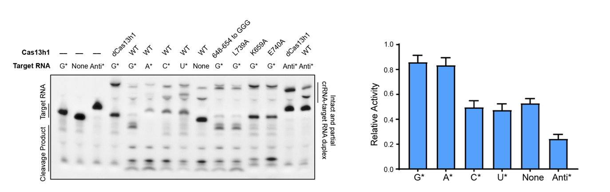
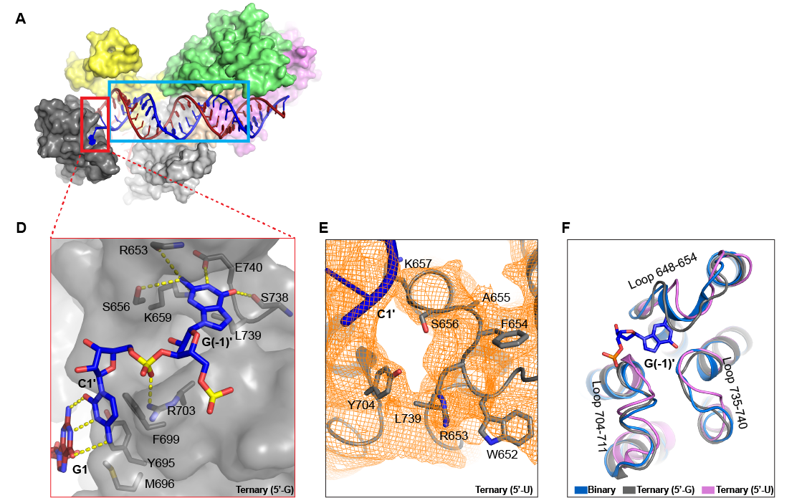
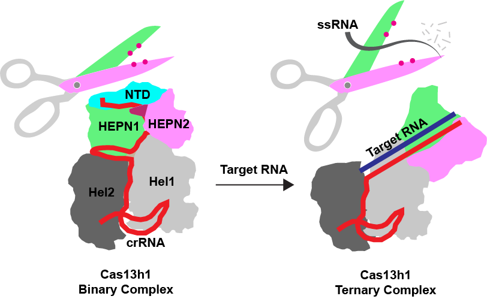

CRISPR-Cas13h的工作机理研究
CRISPR-Cas是一种细菌和古菌防御移动遗传元件入侵的获得性免疫系统，Cas蛋白能够在向导RNA (guide RNA) 的引导下特异识别并切割靶序列，使其成为一种非常灵活的靶向基因编辑工具。CRISPR-Cas相关的基因编辑工具也以其高效、简便等优势成为生命医学领域最前沿的技术之一。Class 2类CRISPR-Cas系统包含II型、V型、VI型，分别编码Cas9、Cas12、Cas13，他们因为精简的特性被广泛地应用，CRISPR-Cas13是唯一只靶向RNA的系统，由于其自身具有的靶RNA切割活性和非特异的旁切活性，Cas13被广泛应用于RNA编辑、RNA敲低和分子诊断等场景。2022年，中科院动物研究所李伟团队发现了五种Cas13新亚型（Cas13e、Cas13f、Cas13g、Cas13h、Cas13i），这极大地丰富了我们对Cas13多样性的认知[1]。他们对这些亚型在细胞内的RNA干扰效果进行了系统的研究，发现了数个精简且高活性的亚型，为相关RNA技术铺平了道路。而对这些酶的生化活性和结构机理，则尚未有相关报道。为丰富对Cas13的认识，作者选择了Cas13h1，一个具有较强切割活性和新奇结构特征的亚型，展开了细致的生化和结构的研究。题为《Molecular mechanism for target RNA recognition and cleavage of Cas13h》的研究论文于4月26日发表在《Nucleic Acids Research》上。
本研究的具体发现如下：
1）Cas13h1对靶序列末端碱基的偏好性
“免疫系统”的一大特性是能够区分“自我”和“非我”，而靶序列的末端碱基对于CRISPR-Cas系统区分“自我”与“非我”是至关重要的。对于I型、II型、V型的CRISPR-Cas系统而言，他们严格依赖PAM序列来激活酶的活性，从而避免发生基因组的自切。III型CRISPR-Cas系统同时靶向RNA和DNA，它们依赖anti-tag机制来避免基因组的自切。体外或者半体内的实验表明，某些Cas13（并非所有）的切割活性受到了末端碱基PFS和anti-tag两种元件的调节。在我们的研究中发现，当靶序列的末端为A或者G时， Cas13h1的切割活性得到增强。而靶序列末端存在anti-tag时，则活性几乎被完全抑制。
值得一提的是，虽然我们的和之前的研究均表明了末端碱基（PFS和anti-tag）对Cas13家族蛋白酶活的影响，但这种机制在生理条件下是否存在仍有很大争议[2]。因为VI型系统只能靶向RNA，只有当宿主细菌在CRISPR array区域产生非常重要的反向转录RNA时，这种保险机制才是有意义的，而目前尚未有研究表明在CRISPR array区域检测到反向转录RNA。

图1，靶序列末端碱基对Cas13h1切割活性的影响。
2）Cas13h1末端碱基偏好性的结构基础
在解析得到Cas13h1-crRNA-target RNA（三元复合物）之后，如下图2D所示，我们意外地发现Cas13h1的Helical-2结构域具有一个核酸结合口袋，能够容纳并识别末端碱基G。如下图2E所示，而如果将末端碱基换成U，则无法在该口袋的电子密度图中看到U，说明该核酸结合口袋赋予了Cas13h1对G/A核苷酸的偏好性。这是首次在Cas13蛋白中发现有专门的结构域用于识别末端碱基。值得一提的是，这种末端碱基的识别机制也出现在其他核酸酶，如人来源Ago2的MID结构域中。同时，鉴于我们观察到anti-tag对Cas13h1切割活性的抑制，我们也正在探索anti-tag抑制Cas13h1切割活性的结构基础。

图2，Cas13h1的Helical-2结构域具有PFS识别口袋。
3）Cas13h1的激活机理
CRISPR-Cas效应复合物工作机理的核心问题在于探讨切割活性是如何被靶序列激活的。为了研究Cas13h1的激活机理，作者解析了3.1Å分辨率的Cas13h1-crRNA（二元复合物）和3.0Å分辨率的三元复合物结构，发现相较于二元复合物，三元复合物存在巨大的构象改变。除了结构域水平的重排之外，作者在HEPN结构域内部发现许多与切割激活相关的构象变化，包括N端结构域和催化Loop的不稳定，以及催化氨基酸的重排。其中最重要的发现在于：如下图所示，在三元复合物中HEPN1和HEPN2结构域彼此分离，导致HEPN结构域的催化残基之间的距离变远，这与之前靠近的激活模型完全相反[3]。

图3，靶RNA诱导的Cas13h1的激活示意图。
4）其他
大多数的Cas13有两种独立的核酸酶活性，分别用于前体RNA的加工和单链RNA的切割。不过，随着研究的深入，越来越多的Cas13被发现不具备前体RNA加工活性。这些核酸酶包括嗜热菌来源的HheCas13a和TccCas13a以及Cas13X.1。我们发现，Cas13h1也不具备前体RNA加工活性。而活性缺失这一观察为该领域的研究带来一些疑问：前体RNA的加工在这些系统中是否发生以及如何发生？除此之外，错配实验发现，靶RNA中间碱基错配容易损伤Cas13h1的切割活性，这表明Cas13h1在向导-靶RNA中间可能存在“种子”区域。除此之外，依据结构，作者设计了详尽的Cas13h1突变，证实了许多影响Cas13h1切割活性的关键氨基酸。
综上所述，本研究发现了PFS介导的Cas13h1活性增强以及anti-tag介导的Cas13h1活性抑制，并阐明了Cas13h1识别PFS的结构基础。更重要的是，本研究发现了Cas13一种全新的、复杂的激活过程，为Cas13领域的工作机理提供了全新的认知。二年级硕士生陈福根和张晨滴为本文共同第一作者，硕士生薛佳琳和博士生王凤参与了该工作。李壮博士为本文通讯作者。
参考文献：
1. Hu, Y., et al., Metagenomic discovery of novel CRISPR-Cas13 systems. Cell Discov, 2022. 8(1): p. 107.
2. Meeske, A.J. and L.A. Marraffini, RNA Guide Complementarity Prevents Self-Targeting in Type VI CRISPR Systems. Mol Cell, 2018. 71(5): p. 791-801 e3.
3. Liu, L., et al., The Molecular Architecture for RNA-Guided RNA Cleavage by Cas13a. Cell, 2017. 170(4): p. 714-726 e10.